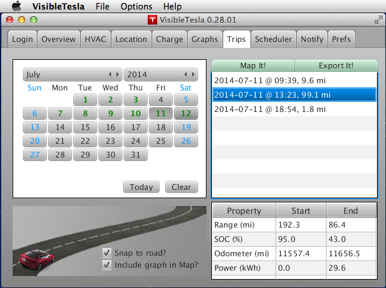
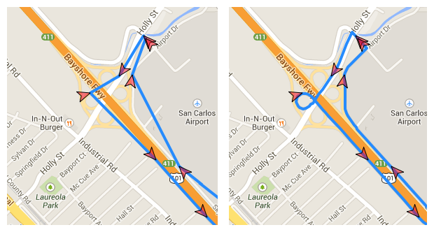

The Trips Tab
The Trips tab allows you to view previous trips that have been captured by VisibleTesla. The app looks at stored location information and breaks the data up into separate trips. Your drive to work in the morning would be one trip, your drive home at night would be another. An outing to a restaurant would be another. Sometimes it is not clear what data constitutes a trip. Should the 15 minute stop for fast food break a single trip into two? VisibleTesla makes some choices in these cases which you may or may not agree with. Fortunately if VisibleTesla breaks up what you consider to be a single trip into two trips, you can view both on the same map.
The Trips Tab displays a calendar and allows you to select the day or days that contain the trips you're interested in viewing. When you select a day (or range of days), a list is populated with all of the trips in that time span. You can also choose to view a chart with other trip statistics along with the map. To do so, select the "Include graph in Map?" checkbox in the bottom center of the tab. VisibleTesla will remember this setting, so you don't have to do this every time.
When one or more trips are selected from the dropdown, some basic information about the trip will be displayed in a table below the trip list. The table shows the following information (if available):
- Starting and Ending Range
- Starting and Ending State of Charge (SOC)
- Starting and Ending Odometer reading
The following screen shot shows a single day selected, a single trip from that day selected, and data about that trip shown in the property table.
Select one or more of the available trips and click the Map It button to see your trip. A new browser window will appear with a Google map that plots your trip. The map will contain a marker showing the location of the vehicle every time a reading was taken. If you selected "Include graph in Map?" then you'll see the graph displayed below the map.
The data currently provided is Elevation (in meters), Speed, and Power. Note that the elevations displayed are not from the car's GPS. They are from Google's elevation data for the specified vehicle locations. Google allows a limited number of elevation queries per day from a given user (2500 requests, 25,000 total elevations). This should be enough for normal usage.
You can interact with the graph and the map in several ways:
- If you hover your mouse above a map marker it will show you the date and time that the car was at that location and the speed it was traveling at the time.
- If you select a legend item (such as Speed) it will toggle that series on or off in the chart. When it is off, the legend item will appear greyed out.
- If you select a point on one of the lines in the graph, the corresponding car marker in the map will highlight (it will get bigger and turn yellow).
- If you select a car marker in the map, it will select the corresponding data points in the chart.
Snap to road
The following screen shot shows a sample map/graph. Note that one of the map markers has been selected (shown as a large yellow marker) and the corresponding entries are marked in the graph. You'll notice that the path displayed is "as the crow flys." That is, the path shows straight lines between markers regardless of whether those lines actually correspond to roads. If you select the Snap to road option, then VisibleTesla will do it's best to make the path track roadways. VisibleTesla has no way to know your actual path between markers, so this is just a guess and can be wrong. Additionally, there may be no guess available for times when you are driving in areas without defined roads such as parking lots.
Click to enlarge
This process requires the use of a Google service which is rate limited and may be slow as a result. The setting for Snap to road is not remembered between runs of VisibleTesla. This may change in the future. The images below show a portion of the same route displayed without (left) and with (right) the Snap to road option selected.

Using Google Earth
You'll notice that next to the "Map it!" button there is also an Export It! button. This is very similar except that instead of opening a Google Map, it will create a ".kmz" file which is input to Google Earth. Among other things, this will allow you to visualize your elevation profile over the course of the selected trip and let you watch your motion through the trip. This guide does not describe Google Earth. It provides only a basic overview. The steps involved are as follows:
- After selecting the trip of interest, click the "Export it!" button.
- You'll be asked to choose a location and name for the output file. Be sure to use a ".kmz" extension (e.g. MyTrip.kmz).
- After the export is complete, locate and double-click your newly created .kmz file to open Google Earth.
- When Google Earth opens, you'll see a "Places" panel on the left hand side. Inside that panel you'll see a folder named "Temporary Places" and inside that you'll see the name of the file you just created (e.g. MyTrip.kmz).
- Click the triangle next to your trip and you'll see two items. The first will be labeled "Tesla Path on [date @ time]
- Left-click that item and select "Show Elevation Profile." As the name implies, it will show you the elevations along your path. These elevations are not from the car's GPS. It is Google's elevation data for the specified vehicle locations.
- In the bottom right of the places pane you'll see an icon that is similar to the one next to your selected item (it is 3 dots connected by lines). If you press this button you'll be taken on a virtual tour through your data. There are many options in Google Earth preferences to adjust the speed and viewpoint of the tour.
Here is a screen shot of Google Earth displaying the elevation profile and trip path for a sample trip.
Click to enlarge